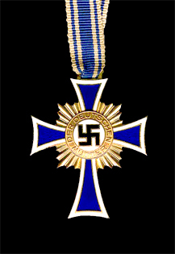
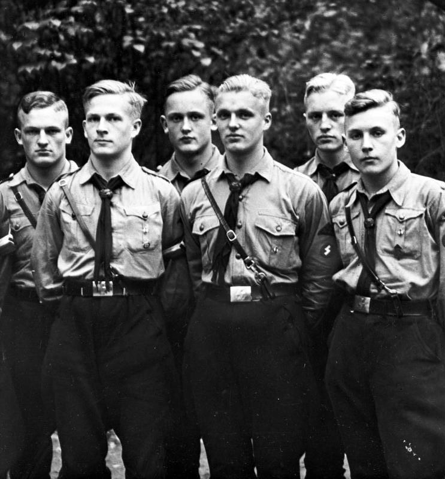
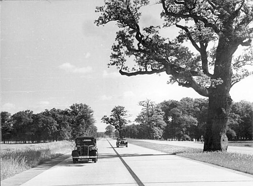
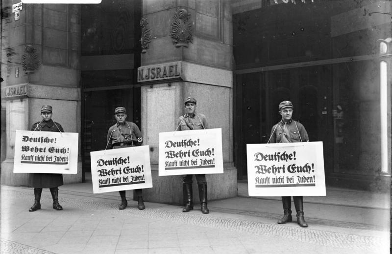
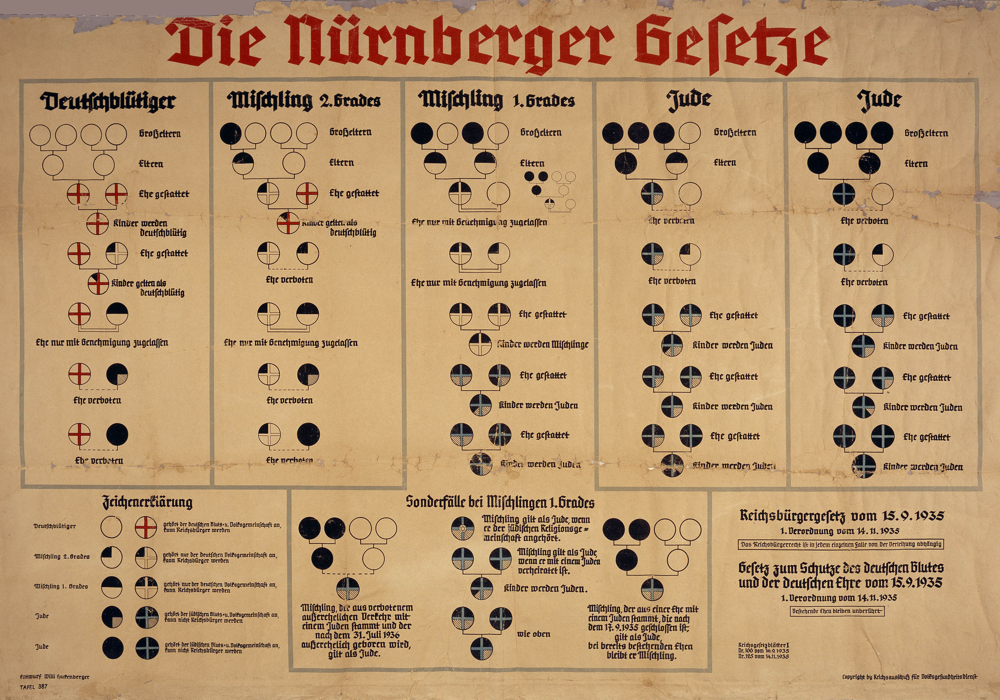

Key Topic 4: Life in Nazi Germany, 1933–39
Paper 3: Weimar and Nazi Germany, 1918-39
Course Textbook
Enquiry: From Democracy to Dictatorship: How did Hitler destroy the Weimar Republic?
Contents
|
Lesson 1: Key Topic 4.1: Nazi Policies Towards Women, 1933–1939
|
|
|
Lesson 2: Key Topic 4.2: Nazi Policies Towards the Young, 1933–1939
|
|
|
Lesson 3: Key Topic 4.3: Employment and Living Standards, 1933–1939
|
|
|
Lesson 4: Key Topic 4.4: The Persecution of Minorities, 1933–1939
|
|
L1: Key Topic 4.1: Nazi Policies Towards Women, 1933–1939[[SRC_MARKER:L12_Start]]
Learning Objectives
Explain the traditional domestic ideal of Kinder, Küche, Kirche and the systematic removal of women from professional careers.
Analyse how the Law for the Encouragement of Marriage (June 1933) combined pro-natalist incentives with unemployment reduction.
Assess how state honours like the Mother’s Cross and the Lebensborn programme aimed to expand the racially pure Aryan population.
Examine how eugenic legislation and the Law for the Prevention of Hereditarily Diseased Offspring enforced biological control.
Evaluate the dramatic policy reversal after 1937 when Hermann Göring’s Four-Year Plan forced women back into industrial labour.
Recall & Retrieval
1. Who was Joseph Goebbels?
2. Name two methods of Nazi propaganda.
3. Who were the SS (Schutzstaffel)?
4. What was the Gestapo?
5. What was the role of concentration camps in the 1930s?
6. What was the Enabling Act?
7. What was the Night of the Long Knives?
8. Who was Ernst Röhm?
9. What happened to the Reichstag in 1933?
10. What title did Hitler take in 1934?
Vocabulary Check
The Odd One Out: Circle ONE term that does not belong with the others. Explain your reasoning: What historical connection links the other terms, and why is your chosen term different?
Kinder, Küche, Kirche | Law for the Encouragement of Marriage (1933) | The Mother’s Cross (Mutterkreuz) | Lebensborn (Spring of Life) | NS-Frauenschaft (NSF) | Deutsches Frauenwerk (DFW) | Gertrud Scholtz-Klink
Teacher Model / Pupil Reasoning:
[[SRC_MARKER:L12_Source_2]]
Source S1: Nazi Propaganda Promoting the Domestic Ideal and Aryan Motherhood

Nazi photographic propaganda showing young German women receiving domestic training in childcare and cooking, reinforcing the slogan "Kinder, Küche, Kirche" (Children, Kitchen, Church).
[1.1] (Source A) Nazi ideology promoted a patriarchal view of women, rejecting Weimar emancipation as decadent. Hitler declared: "The world of the man is the state; the world of woman is her husband, family, and home." The regime championed Kinder, Küche, Kirche.
[1.2] From 1933, women were purged from public professional life: female doctors, civil servants, and judges were dismissed, female lawyers barred from practice, and university enrollment for women strictly capped at 10%.
[2.1] To increase the Aryan birth rate, the regime introduced the Law for the Encouragement of Marriage in 1933. Newlyweds received a 1,000-mark interest-free loan; for each child born, 25% of the loan was permanently forgiven.
[2.2] Contraception and abortion were made illegal, and healthy Aryan women were awarded the Cross of Honour of the German Mother: bronze for four children, silver for six, and gold for eight or more.
[[SRC_MARKER:L12_Source_4]]
Source S2: The Honour Cross of the German Mother (Mutterkreuz) (1938)

The Honour Cross of the German Mother (Ehrenkreuz der Deutschen Mutter) in Bronze (4–5 children), Silver (6–7 children), and Gold (8+ children), instituted on 16 December 1938.
[3.1] (Source B) In 1935, Himmler founded the secret Lebensborn (Fountain of Life) programme. Originally providing maternity homes for wives of SS officers, it expanded to arrange meetings between single women and SS men to produce racially pure children.
[3.2] Over 8,000 children were born in Lebensborn homes, where babies were christened in SS rituals under daggers, demonstrating the regime’s view of women as biological instruments of the state.
[4.1] Women were organized into compulsory state leagues: the National Socialist Women’s League (NS-Frauenschaft) and German Women’s Enterprise, teaching domestic economy, healthy cookery, and racial hygiene.
[4.2] The regime dictated personal appearance: women were urged to wear modest traditional dirndls, style hair in plain braids or buns, avoid cosmetics and trousers, and abstain from smoking or dieting to preserve fertility.
[5.1] When rapid rearmament caused industrial labor shortages after 1937, the regime faced a contradiction: needing women workers in factories while telling them to stay home. A compulsory "Duty Year" was introduced for unmarried women.
[5.2] By 1939, female employment had actually risen from 11.6 million in 1933 to 14.6 million, proving that war preparation forced the regime to compromise its ideological domestic dogmas.
Pair & Share Activity
Q1. Discuss with your partner: Did Nazi policies towards women succeed in their goals?
The 'But/Because/So' Strategy
Q2. Complete these sentences based on the lesson's core narrative: 1) Nazi policies aimed to confine women to the roles of "Kinder, Küche, Kirche" BUT... 2) The Law for the Encouragement of Marriage was introduced BECAUSE... 3) The Nazis created organizations like the NS-Frauenschaft SO...
Vocabulary in Context
Q3. Using the keywords 'Kinder, Küche, Kirche', 'Law for the Encouragement of Marriage', 'The Mother’s Cross', and 'Gertrud Scholtz-Klink', write a short paragraph explaining how Nazi policies aimed to shape women's lives in the 1930s.
Causal Linkage
Q4. Explain how the Nazi ideology of racial purity and the urgent need for population growth led directly to the implementation of programs like the 'Lebensborn' and the creation of 'The Mother’s Cross'.
Counter-Factual History
Q5. What if the Nazi regime had not faced severe labour shortages due to rearmament? How might their policies towards women's employment have evolved differently, and what would be the long-term implications for German society?
[[SRC_MARKER:L12_Source_0]]
Source S3: Nazi Propaganda Promoting the Domestic Ideal and Aryan Motherhood
Nazi photographic propaganda showing young German women receiving domestic training in childcare and cooking, reinforcing the slogan "Kinder, Küche, Kirche" (Children, Kitchen, Church).
[[SRC_MARKER:L12_Source_1]]
Source S4: The Honour Cross of the German Mother (Mutterkreuz) (1938)
The Honour Cross of the German Mother (Ehrenkreuz der Deutschen Mutter) in Bronze (4–5 children), Silver (6–7 children), and Gold (8+ children), instituted on 16 December 1938.
GCSE Exam Practice
Q6. 1. Give two things you can infer from Source A about Nazi views on the role of women in German society. [4 marks]
Q7. 2. Explain why Nazi policies towards women were implemented in the years 1933–1939. [12 marks]
L2: Key Topic 4.2: Nazi Policies Towards the Young, 1933–1939[[SRC_MARKER:L13_Start]]
Learning Objectives
Explain how the Hitler Youth (Hitlerjugend) prepared boys for future military service and total obedience to the Führer.
Analyse the training of adolescent girls for motherhood and racial preservation in the League of German Girls (BDM).
Assess why the regime enacted decrees in 1936 and 1939 to make youth group attendance legally compulsory.
Examine how the teaching profession was purged and Nazified through the National Socialist Teachers’ League (NSLB).
Evaluate how the school curriculum and elite academies (Napolas) were rewritten to prioritize physical fitness, racial theory, and militarism.
Recall & Retrieval
1. What were the 'Three Ks' for women in Nazi Germany?
2. What was the Law for the Encouragement of Marriage?
3. What was the Mother's Cross?
4. What was the Hitler Youth?
5. How did schools change under the Nazis?
6. Who was Joseph Goebbels?
7. What was the Gestapo?
8. Who led the SS?
9. What was the Enabling Act?
10. Who were the 'November Criminals'?
Vocabulary Check
The Golden Sentence: Choose TWO terms from the word bank. Write ONE grammatically sophisticated, historically accurate sentence connecting them using a causal conjunction (because, although, or consequently):
Indoctrination | National Socialist Teachers' League (NSLB) | Bernhard Rust | Eugenics (Race Studies) | Hitlerjugend (HJ) | Bund Deutscher Mädel (BDM) | Faith and Beauty Society
Teacher Model / Pupil Sentence:
[[SRC_MARKER:L13_Source_2]]
Source S1: Hitler Youth Boys in Paramilitary Uniform (Bundesarchiv Bild 119-5592-14A)

A group of Hitler Youth (Hitlerjugend) boys in military-style uniforms, belts, and swastika armbands, participating in outdoor drill and ideological conditioning.
[1.1] (Source A) Hitler recognized that the Thousand-Year Reich depended on capturing young minds. Led by Baldur von Schirach, boys progressed from Pimpfe (ages 6–10) to Jungvolk (ages 10–14) and into the Hitler Youth (HJ, ages 14–18).
[1.2] In 1936, membership was made compulsory, expanding to 7.2 million by 1939. Boyhood activities revolved around military preparation: route marches with heavy packs, trench digging, and rifle target practice.
[[SRC_MARKER:L13_Source_3]]
Source S2: Bund Deutscher Mädel (BDM) Girls Performing Synchronised Gymnastics (c. 1936)
Girls of the League of German Girls (Bund Deutscher Mädel) in uniform white shirts and black skirts performing synchronized physical exercises in the open air.
[2.1] Girls joined the Jungmädel (ages 10–14) and the League of German Girls (BDM, ages 14–18) (Source B). Activities combined physical fitness, gymnastics, and camping with domestic training.
[2.2] Girls learned infant care, needlework, and racial selection. At age seventeen, girls entered the Faith and Beauty society, preparing them to manage households and raise children in accordance with Nazi ideology.
[3.1] The school curriculum was thoroughly Nazified. All teachers were forced to join the National Socialist Teachers’ League, swearing personal loyalty to Hitler, while Jewish teachers were dismissed.
[3.2] History was rewritten to praise Germanic heroes and condemn Versailles; Biology taught racial hierarchy and eugenics; and Mathematics calculated the cost of maintaining disabled patients versus building bombers.
[4.1] Physical education dominated school timetables, taking up 15% of the day. Boys engaged in boxing and stamina sports to produce hardened soldiers, while girls practiced gymnastics for motherhood.
[4.2] Elite training academies—Adolf Hitler Schools and Napolas (National Political Educational Institutes)—recruited racially pure boys for rigorous military discipline to produce future SS leaders.
[5.1] Indoctrination achieved significant success: millions of German youths developed fanatical loyalty to Hitler, often reporting parents who criticized the regime to the Gestapo.
[5.2] However, academic standards dropped sharply as sport replaced scholarship, while alienated teenagers rebelled, forming underground groups like the Edelweiss Pirates and Swing Youth.
Pair & Share Activity
Q1. Discuss with your partner: Were the Hitler Youth effective in controlling the young?
The 'But/Because/So' Strategy
Q2. Complete the following sentences based on the lesson: 1) The Nazi regime introduced significant changes to the school curriculum BUT... 2) Membership in the Hitlerjugend (HJ) and Bund Deutscher Mädel (BDM) became compulsory BECAUSE... 3) Teachers faced pressure to join the NSLB and swear loyalty to Hitler, SO...
Vocabulary in Context
Q3. Explain how the following keywords relate to Nazi policies towards the young, using specific examples from the lesson narrative: Indoctrination, National Socialist Teachers' League (NSLB), Eugenics (Race Studies), Hitlerjugend (HJ), Bund Deutscher Mädel (BDM).
Causal Linkage
Q4. How did the Nazi regime's control over the education system and its establishment of compulsory youth organizations (HJ and BDM) *together* serve to consolidate their power and prepare Germany for its long-term goals by 1939?
The 'What If' Challenge
Q5. What if the Nazi regime had *failed* to gain significant control over the education system and youth organizations by 1939? How might this have impacted their ability to consolidate power, prepare for war, and maintain public support in the long term?
[[SRC_MARKER:L13_Source_0]]
Source S3: Hitler Youth Boys in Paramilitary Uniform (Bundesarchiv Bild 119-5592-14A)
A group of Hitler Youth (Hitlerjugend) boys in military-style uniforms, belts, and swastika armbands, participating in outdoor drill and ideological conditioning.
[[SRC_MARKER:L13_Source_1]]
Source S4: Bund Deutscher Mädel (BDM) Girls Performing Synchronised Gymnastics (c. 1936)
Girls of the League of German Girls (Bund Deutscher Mädel) in uniform white shirts and black skirts performing synchronized physical exercises in the open air.
GCSE Exam Practice
Q6. 1. How useful is Source B for an enquiry into how the Nazi regime influenced young people in Germany between 1933 and 1939? [6 marks]
Q7. 2. Explain why Nazi policies towards the young were implemented, 1933–1939. [12 marks]
L3: Key Topic 4.3: Employment and Living Standards, 1933–1939[[SRC_MARKER:L14_Start]]
Learning Objectives
Explain how the destruction of independent trade unions and the creation of the German Labour Front (DAF) eliminated workers’ rights.
Analyse how public works schemes—specifically the Reich Labour Service (RAD) and Autobahn construction—artificially absorbed the unemployed.
Assess how the reintroduction of military conscription and "invisible unemployment" distorted official employment statistics.
Examine how Strength Through Joy (KdF) and Beauty of Labour (SdA) provided state-sponsored leisure to compensate for lost liberties.
Evaluate the impact of Hermann Göring’s Four-Year Plan and the "Guns vs. Butter" dilemma on German workers’ living standards by 1939.
Recall & Retrieval
1. What were the 'Three Ks' (Kinder, Küche, Kirche) expected of women in Nazi Germany?
2. What financial incentive did the 1933 Law for the Encouragement of Marriage offer young couples?
3. What was the Mother's Cross awarded for?
4. What was the Hitler Youth (Hitlerjugend / HJ)?
5. What was the League of German Girls (Bund Deutscher Mädel / BDM)?
6. How did the school curriculum change under the Nazis?
7. Who were the Edelweiss Pirates?
8. Who was Joseph Goebbels?
9. What was the Gestapo?
10. What was the Night of the Long Knives (June 1934)?
Vocabulary Check
Conceptual Classification: Categorise the terms from the word bank into the two historical boxes below:
Invisible Unemployment | Autarky | Ersatz | Hermann Goering | National Labour Service (RAD) | German Labour Front (DAF) | Strength Through Joy (KdF) | Beauty of Labour (SdA)
Power, Governance & Warfare
Economy, Trade & Society
[1.1] When Hitler took power in 1933, six million Germans were unemployed. On 2 May 1933, the regime raided trade union offices, abolishing independent unions and replacing them with the German Labour Front (DAF) under Dr. Robert Ley.
[1.2] DAF membership was practically compulsory, reaching 22 million workers. Strikes were outlawed, wages were frozen, and every worker was issued a Work Book (Arbeitsbuch), without which they could not change jobs.
[[SRC_MARKER:L14_Source_3]]
Source S1: Construction Workers on the Reichsautobahn Project (c. 1935)

German labourers building a stretch of the Reichsautobahn motorway network, hailed by Nazi propaganda as proof that Hitler had conquered unemployment.
[2.1] In 1935, the regime made the Reich Labour Service (RAD) compulsory for all men aged 18 to 25, requiring six months of manual service living in tent camps under military discipline.
[2.2] Workers drained marshes, planted forests, and built 7,000 km of dual-carriageway Autobahnen (Source A). The scheme slashed official unemployment numbers while creating infrastructure to move military divisions rapidly.
[3.1] Conscription was reintroduced in 1935, expanding the army from 100,000 to 1.4 million men by 1939. Massive rearmament stimulated heavy industry, filling order books for steel mills and munitions factories.
[3.2] In 1936, Hermann Göring launched the Four-Year Plan to achieve economic self-sufficiency (Autarky), producing synthetic rubber, oil, and textiles to ensure Germany could survive a wartime naval blockade.
[[SRC_MARKER:L14_Source_5]]
Source S2: Strength Through Joy (KdF) Scheme Promotional Emblem and Programme (1938)
The official sun-wheel cog symbol of the Strength Through Joy (Kraft durch Freude - KdF) organization, which organized subsidized holidays, theatre trips, and the Volkswagen car scheme.
[4.1] (Source B) To maintain worker morale, Ley founded Strength Through Joy (Kraft durch Freude, or KdF). The organization provided subsidized holidays, theatre tickets, and Mediterranean cruises for millions of industrial workers.
[4.2] The regime introduced the Volkswagen Beetle savings scheme: workers saved 5 marks a week in stamp booklets to purchase a family car. Over 300,000 participated, though factories produced military vehicles instead, delivering no civilian cars.
[5.1] By 1939, official unemployment had plummeted to 300,000, creating an appearance of economic prosperity. However, historians highlight "invisible unemployment": Jews, dismissed women, and RAD conscripts were excluded from official figures.
[5.2] Furthermore, while total earnings rose, the average working week lengthened from 43 to 47 hours, food prices increased, and the Four-Year Plan accumulated massive deficits, leaving the economy dependent on conquest to avoid bankruptcy.
Pair & Share Activity
Q1. Discuss with your partner: Did living standards really improve for workers under the Nazis?
True/False/Justify
Q2. Read the following statements. For each, state whether it is True or False, and then justify your answer using specific evidence from the lesson narrative.
1. Nazi Germany completely eliminated unemployment by 1939 through genuine, sustainable economic growth.
2. The Four Year Plan, led by Hermann Goering, aimed to make Germany economically self-sufficient and prepare for war.
3. Living standards for most Germans significantly improved between 1933 and 1939, with an abundance of consumer goods.
Vocabulary in Context
Q3. Write a short paragraph (5-7 sentences) explaining how the Nazi regime managed both employment figures and public perception of living standards between 1933 and 1939. You must accurately use at least FIVE of the following keywords: Invisible Unemployment, Autarky, Ersatz, Hermann Goering, National Labour Service (RAD), German Labour Front (DAF), Strength Through Joy (KdF), Beauty of Labour (SdA). Underline or bold the keywords you use.
Causal Linkage
Q4. Explain the complex relationship between the Nazi regime's rearmament goals, the official reduction in unemployment, and the actual living standards of ordinary Germans between 1933 and 1939. Your answer should clearly demonstrate how these three elements were interconnected and influenced each other.
Counter-Factual History
Q5. Imagine a scenario where, from 1933, the Nazi regime had genuinely prioritized improving the living standards of ordinary Germans through increased consumer goods production, higher real wages, and less emphasis on rearmament and autarky. How might this alternative economic strategy have impacted:
1. The regime's political stability and public support?
2. Germany's international position and long-term geopolitical ambitions?
Justify your reasoning with specific references to the core narrative and your understanding of Nazi ideology.
[[SRC_MARKER:L14_Source_0]]
Source S3: Construction Workers on the Reichsautobahn Project (c. 1935)
German labourers building a stretch of the Reichsautobahn motorway network, hailed by Nazi propaganda as proof that Hitler had conquered unemployment.
[[SRC_MARKER:L14_Source_1]]
Source S4: Strength Through Joy (KdF) Scheme Promotional Emblem and Programme (1938)
The official sun-wheel cog symbol of the Strength Through Joy (Kraft durch Freude - KdF) organization, which organized subsidized holidays, theatre trips, and the Volkswagen car scheme.
GCSE Exam Practice
Q6. 3(a) Part 1: Content & Provenance (COP) Comparative Analysis for Sources B & C. [4 marks]
Q7. 3(a). How useful are Sources B and C for an enquiry into employment and living standards in Nazi Germany between 1933 and 1939? [8 marks]
L4: Key Topic 4.4: The Persecution of Minorities, 1933–1939[[SRC_MARKER:L15_Start]]
Learning Objectives
Explain how the biological hierarchy of Herrenvolk and Untermenschen underpinned the nationwide anti-Jewish boycott of 1 April 1933.
Analyse how the Nuremberg Laws of September 1935 converted antisemitic ideology into statutory German constitutional law.
Assess the persecution of Roma and Sinti, homosexuals, and the disabled under Nazi racial hygiene policies.
Examine the causes, execution, and devastating impact of the Kristallnacht pogrom of 9–10 November 1938.
Evaluate the post-Kristallnacht economic Aryanization and the forced emigration policy orchestrated by Reinhard Heydrich.
Recall & Retrieval
1. What was the National Labour Service (RAD)?
2. Name two ways the Nazis reduced official unemployment through 'invisible unemployment'.
3. What was 'Strength Through Joy' (Kraft durch Freude / KdF)?
4. What was the 'Beauty of Labour' (Schönheit der Arbeit / SdA)?
5. What organisation replaced all independent trade unions in May 1933?
6. What was the Volkswagen 'People's Car' scheme?
7. What were the 'Three Ks' expected of women under Nazi policy?
8. What was the Mother's Cross award?
9. What were the Edelweiss Pirates and Swing Youth?
10. What was the Gestapo?
Vocabulary Check
Spot the Deliberate Error: Read the statement below. One historical fact or vocabulary concept has been deliberately falsified. Underline the error and explain the accurate historical reality below:
Volksgemeinschaft | Social Darwinism | Untermenschen | Asocials | Anti-Semitism | Eugenics | Aryanisation
"Nazi racial policy defined the Volksgemeinschaft as an inclusive democratic community that protected Asocials and banned all Anti-Semitism and Aryanisation."
Teacher Model / Historical Correction:
[[SRC_MARKER:L15_Source_3]]
Source S1: SA Stormtroopers Enforcing the Nationwide Anti-Jewish Boycott (1 April 1933)

Uniformed SA stormtroopers pasting placards stating "Deutsche, verteidigt euch! Kauft nicht bei Juden!" (Germans, defend yourselves! Do not buy from Jews!) on the window of a Jewish department store in Berlin, 1 April 1933.
[1.1] (Source A) Nazi ideology was rooted in Social Darwinism: Germans were portrayed as the Aryan "master race" (Herrenvolk), while Slavs, Roma, and Jews were classified as sub-humans (Untermenschen) or racial parasites.
[1.2] On 1 April 1933, the regime staged a national boycott of Jewish shops and businesses, with SA men painting yellow Stars of David on windows. One week later, the Civil Service Law dismissed all Jewish judges, civil servants, and teachers.
[[SRC_MARKER:L15_Source_4]]
Source S2: Official Racial Classification Chart under the Nuremberg Laws (September 1935)

The official Reichsgesetzblatt diagram explaining the 1935 Nuremberg Laws (Reich Citizenship Law and Law for the Protection of German Blood and German Honour), categorizing individuals by ancestral grandparent lineage.
[2.1] (Source B) In September 1935, the regime enacted the Nuremberg Laws. The Reich Citizenship Law stripped Jews of German citizenship, making them stateless subjects without voting rights or passport protections.
[2.2] The Law for the Protection of German Blood and German Honour outlawed marriages and sexual relations between Jews and German citizens. Being Jewish was defined biologically: anyone with three or four Jewish grandparents was legally Jewish.
[3.1] On 9–10 November 1938, the regime staged the Kristallnacht (Night of Broken Glass) pogrom following the assassination of a German diplomat in Paris by a young Polish Jew.
[3.2] SA stormtroopers destroyed over 1,000 synagogues, ransacked 7,500 Jewish businesses, and murdered 91 Jews. Over 20,000 Jewish men were sent to concentration camps, and the Jewish community was fined one billion marks for the damage.
[[SRC_MARKER:L15_Source_6]]
Source S3: Shattered Jewish Shopfront Following Kristallnacht in Berlin (November 1938)
The shattered display windows of a Jewish-owned retail shop in Berlin on the morning of 10 November 1938, following the nationwide pogrom of Kristallnacht.
[4.1] (Source C) Following Kristallnacht, persecution accelerated. In November 1938, Jewish children were banned from attending state schools, and in 1939, Jews were forced to surrender gold and jewellery and had their passports stamped with a red "J".
[4.2] Men were forced to add "Israel" and women "Sara" to their official names. In 1939, the Reich Central Office for Jewish Emigration was created under Reinhard Heydrich to forcibly deport Jews from Germany.
[5.1] Other minority groups suffered brutal persecution. In 1933, the Sterilization Law forced the surgical sterilization of 400,000 individuals with hereditary illnesses, including schizophrenia, epilepsy, and blindness.
[5.2] In 1939, the secret Aktion T4 euthanasia programme began, murdering over 70,000 mentally and physically disabled children and adults with carbon monoxide gas in psychiatric hospitals, prefiguring the Holocaust.
Pair & Share Activity
Q1. Discuss with your partner: How did the Nazis justify the persecution of minorities?
True/False/Justify
Q2. Read the following statements. For each, state whether it is True or False, and then justify your answer using specific information from the lesson narrative.
1. The Nuremberg Laws primarily targeted 'asocials' and homosexuals, stripping them of their citizenship.
2. Kristallnacht was a spontaneous, unorganised outburst of public anger against Jewish businesses and synagogues.
3. The Nazi concept of 'Volksgemeinschaft' aimed to create a unified German society that embraced all citizens, regardless of their background or perceived deficiencies.
Vocabulary in Context
Q3. Using at least THREE of the keywords (Volksgemeinschaft, Social Darwinism, Untermenschen, Asocials, Anti-Semitism, Eugenics, Aryanisation), explain how the Nazi regime justified and implemented its persecution of *Jewish people* between 1933 and 1939.
Causal Linkage
Q4. Explain the causal link between core Nazi ideological concepts (such as 'Social Darwinism' and the idea of 'Untermenschen') and the specific policies of persecution enacted against *both* disabled individuals and Roma/Sinti people between 1933 and 1939.
Complex Causal Reasoning
Q5. To what extent was the persecution of *all* minority groups (Jews, Roma/Sinti, disabled, homosexuals, and 'asocials') between 1933 and 1939 driven by a single, overarching Nazi goal, or were there distinct, separate motivations for persecuting each group? Justify your answer with specific evidence from the lesson.
[[SRC_MARKER:L15_Source_0]]
Source S4: SA Stormtroopers Enforcing the Nationwide Anti-Jewish Boycott (1 April 1933)
Uniformed SA stormtroopers pasting placards stating "Deutsche, verteidigt euch! Kauft nicht bei Juden!" (Germans, defend yourselves! Do not buy from Jews!) on the window of a Jewish department store in Berlin, 1 April 1933.
[[SRC_MARKER:L15_Source_1]]
Source S5: Official Racial Classification Chart under the Nuremberg Laws (September 1935)
The official Reichsgesetzblatt diagram explaining the 1935 Nuremberg Laws (Reich Citizenship Law and Law for the Protection of German Blood and German Honour), categorizing individuals by ancestral grandparent lineage.
[[SRC_MARKER:L15_Source_2]]
Source S6: Shattered Jewish Shopfront Following Kristallnacht in Berlin (November 1938)
The shattered display windows of a Jewish-owned retail shop in Berlin on the morning of 10 November 1938, following the nationwide pogrom of Kristallnacht.
GCSE Exam Practice
Q6. 3(b). Study Interpretations 1 and 2. They give different views about the events of Kristallnacht in November 1938. What is the main difference between these views? [4 marks]
Q7. 3(d). How far do you agree with Interpretation 2 about the events of Kristallnacht? Explain your answer, using both interpretations and your knowledge of the historical context. [16 marks]
Generated: 2026-10-19 15:36:42 UTC | Unit: weimar_nazi_germany